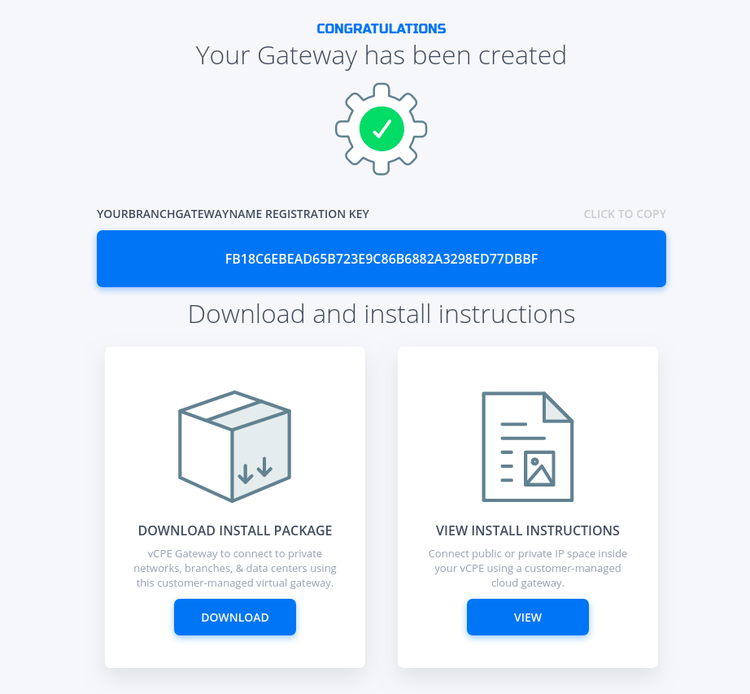
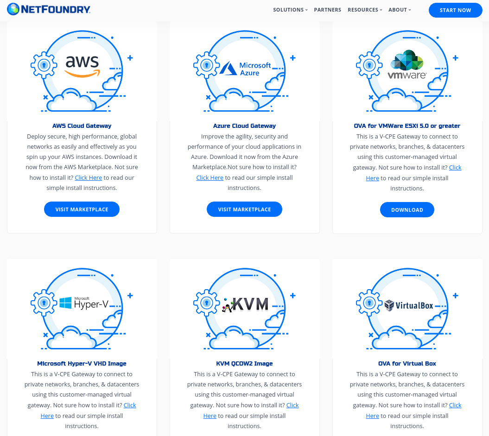

Branch Application To Cloud Application Connectivity
Overview@
This quickstart guide will provide all the steps to create a secure service between a branch application and/or user and an application hosted in Azure Cloud using NetFoundry Overlay Fabric (NFOF).
PAGE UNDER CONSTRUCTION
Important
Assumption is that the NF Fabric is already up.
Through NF Web Console UI@
Create and Deploy NF Gateway in Branch Datacenter@
This section will guide a user through the steps on how to create a NF Manage Gateway in the NF Console UI and install it in the Branch Datacenter.
Console UI
- Navigate to Manage Gateways Page
- Click on + sign in the top right corner.

- Click on "Create Gateway" on the VCPE Gateway Card

- Fill in the required information and click on "Create"

- Copy the Client Registration Key 
- Click on "Download" button on the Installation Package Card 
- Download the correct image for the desired Hypervisor.
- Follow the installation procedure linked in the description of each image type (i.e. "Click Here").
- Once installed, login into it locally with ssh and register it using the key copied in the previous step. Run the following command
sudo nfnreg "reg key"
- Once registered, one should see the gateway status turn to green in NF Console UI

- Done
Create and Deploy NF Azure Gateway@
This section will guide a user through the steps on how to create a NF Manage Gateway in the NF Console UI and install it in the Azure vNet.
Console UI
- Navigate to Manage Gateways Page
- Click on + sign in the top right corner.
- Click on "Create Gateway" on the Azure Cloud Gateway Card

- Fill in the required information and click on "Create"

- Copy the Client Registration Key

- Click on "Deploy to Microsoft Azure". It will take you to the Azure Portal and ask you for your login credentials.
- You will be presented with the template that needs to be filled. The first section is the Basics regarding your Subscription and Resource Group this gateway will be deployed in.

- The second section related to resources associated with this gateway. e.g. vm name, ip address space, security groups, etc. you will paste the registration key copied in step 5. You will also need the public ssh key to use for access to this gateway remotely.

- You will need to agree to Azure Marketplace Terms and Conditions and click to "Purchase" to continue.

- If the NF Gateway was deployed successfully. Here is the view of the Resource Group and NF Conole UI.


- Done
Create IP Host Service@
This section will guide a user through the steps on how to create a NF Service.
Console UI
- Navigate to Manage Services Page under Manage Appwans
- Click on + sign in the top right corner.

- Click on "Create an IP Host Service"

- Fill in the required information for SSH and click on "Create"

- If successfully, the service is green.

- Done
Create AppWan@
This section will guide a user through the steps on how to enable service connectivity to users by creating an appwan.
Console UI
- Navigate to Manage AppWANS Page under Manage Appwans
- Click on + sign in the top right corner.

- Click on "Component Builder Appwan"

- Move the desired gateway (e.g. DemoGateway01) from "Available" Gateways to "Selected" Endpoints. Move the desired service (e.g. DemoServiceSsh) from "Available" to "Selected" Services.

- Click on "Create".

- Done
Programmatically@
via Python and Terraform@
Python Modules
For the code clarity, we have broken down the code into multiple Python modules
Environment Setup Requirements
-
~/.env to store NF Credentials in (e.g.
clientId, clientSecret) to obtain a session token for NF API -
Export Azure Credentials (e.g,
export ARM_TENANT_ID, ARM_CLIENT_ID, ARM_CLIENT_SECRET, ARM_SUBSCRIPTION_ID) to enable resource gateway creation in Azure Resource Group via Terraform.
Additional Information:
- The new Resource Group in Azure is created based on then name provided in Resource yaml, if one does not exists already in the same region (e.g. centralus). The action delete gateway will delete the RG as well even if it was an existing RG. If one does not want to delete the RG, the command
terraform state rm "{tf resource name for RG}"needs to be run before running the gateway delete step. This will ensure that the RG is not deleted. - A new vNet will be created and NF Gateway will be placed in it.
- Environment means the NF Console Environment used (e.g. production), not Azure.